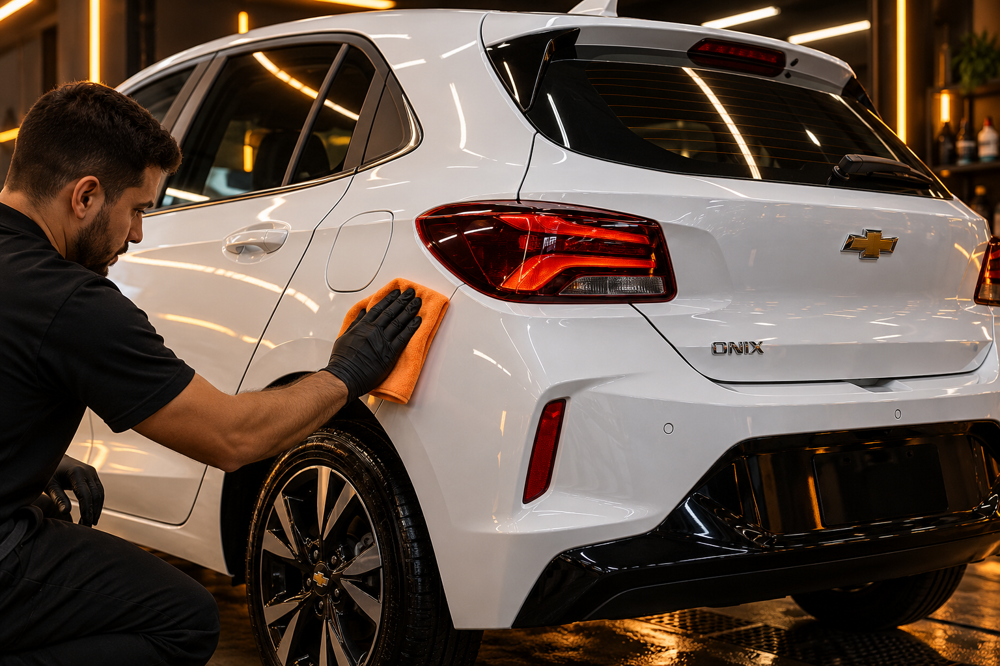
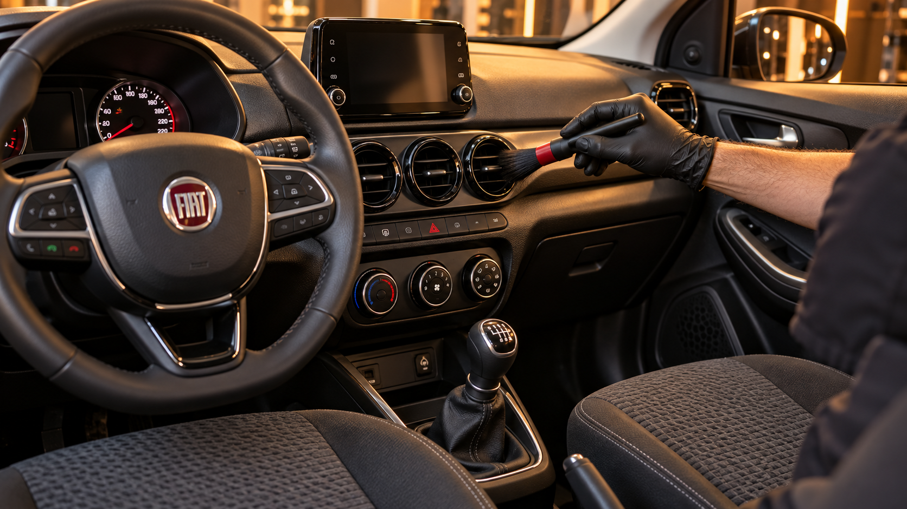

Lavagem detalhada
Um novo olhar para a limpeza do dia a dia, com atenção às áreas que passam despercebidas.
- Limpeza externa e rodas
- Aspiração interna
- Acabamento de vidros e pneus
Limpeza, acabamento e proteção pensados para valorizar cada linha do seu carro. Do primeiro olhar ao último detalhe.
Explore opções de serviços que uma estética automotiva pode apresentar em seu site.
Um novo olhar para a limpeza do dia a dia, com atenção às áreas que passam despercebidas.
Renove a sensação de estar no seu carro com cuidado voltado aos materiais do interior.
Uma proposta de tratamento para realçar o acabamento, conforme a avaliação da pintura.
Uma apresentação visual para destacar os serviços e a identidade do seu negócio.



Imagens ilustrativas geradas para este projeto, inspiradas em modelos presentes no Brasil. Não representam veículos atendidos ou resultados de serviços.
Um fluxo simples para transformar interesse em uma conversa sobre o veículo.
Escolha o serviço e informe o modelo do veículo.
Em uma operação real, a equipe avaliaria as necessidades, o orçamento e a disponibilidade.
O serviço seria realizado somente após a confirmação das condições com a equipe.
Preencha os campos para ver como uma solicitação pode funcionar em um site automotivo.
Não. Este site demonstra o trabalho da Conecta Mais. O formulário apenas apresenta um resumo na tela.
Em uma estética real, o valor pode variar conforme porte, estado de conservação e serviço escolhido. Aqui não apresentamos preços comerciais.
Converse com a Conecta Mais pelo WhatsApp ↗ e conte sobre seu negócio.